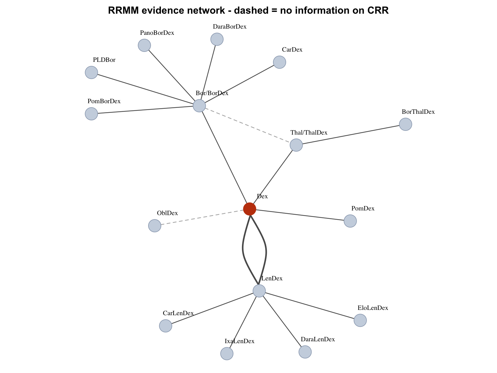
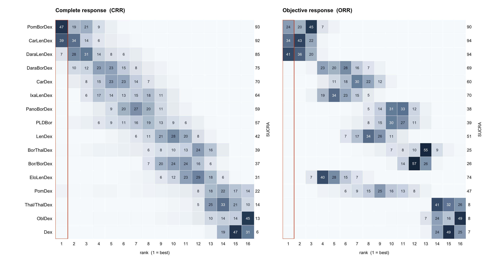

Replicating a Published Multinomial NMA: Response Rates in Relapsed/Refractory Myeloma
A parameter-level replication of van Beurden-Tan et al. 2022 — and what it took to make the published numbers appear
What this replication found
| Finding | How it was established | |
|---|---|---|
| 1 | The published results reproduce exactly — 16 response rates to within 0.27 percentage points, SUCRA to within 0.2 | Independent Stan implementation, validated against every direct comparison in the network |
| 2 | But not from the data file the paper supplies. Appendix A’s data block holds the uncorrected counts; running it gives the leading treatment 4.0% against a published 42% | The Methods state a zero-correction the appendix data does not contain; applying it makes the results appear |
| 3 | The headline is a 47% claim, not a ranking. The treatment reported as best holds 47.1% of the posterior probability of being best; the runner-up holds 38.5% | Rank probabilities computed under the paper’s own priors and correction |
| 4 | The winner changes identity under an undiscussed constant and under a conventional prior | Sensitivity sweep over the zero-correction constant and the prior width |
The question
A conventional network meta-analysis of response splits patients in two: responders and everyone else. But myeloma response is not binary. It is graded — complete response, partial response, less than partial — and collapsing that grading throws away the distinction clinicians actually use.
A multinomial NMA keeps all three categories in one likelihood. The paper’s claim is that this matters: rank the treatments by complete response and one regimen leads; rank them by objective response, which pools complete and partial together, and a different one does.
That claim is correct. The question this page asks is a different one: how much of the ranking is carried by the data, and how much by choices made along the way?
The evidence network

Two structural facts matter later.
Twelve of the sixteen treatments appear in exactly one trial. Their estimates are anchored through a single comparison, and everything else about them is inferred indirectly.
The network contains one closed loop — dexamethasone to bortezomib to thalidomide and back — so inconsistency between direct and indirect evidence could be tested in exactly one place. The paper does not test it. That is not unusual, but a loop that exists and is never examined is worth naming.
What the ranking actually looks like

Read the boxed column, not the SUCRA scores.
On complete response, the leading treatment holds 47% of the probability of being best and the runner-up 39%. The two are separated by one SUCRA point — 93 against 92 — which is not a distinction any decision should rest on. The third holds 7%, and between them the top three account for 93% of the probability of being best without resolving which of the three it is.
On objective response the same three reorder, and elotuzumab plus lenalidomide and dexamethasone moves from SUCRA 31 to SUCRA 74 — twelfth to fourth. That movement has a mechanism: in ELOQUENT-2 elotuzumab lowered complete response (24/325 against 14/321, odds ratio 0.57) while raising overall response. The same drug ranks near the bottom or near the top depending only on which response definition the committee is looking at.
Meanwhile the bottom of the network is sharp. Dexamethasone, oblimersen and thalidomide each place around half their probability mass on a single rank. The model knows what does not work.
The replication
Every one of the sixteen complete response rates, both credible interval bounds included, against the published Figure 2.
| Rank | Treatment | Published | This rebuild | From the Appendix A data | SUCRA ours / published |
|---|---|---|---|---|---|
| 1 | PomBorDex | 42% [17, 71] | 41.9% [16.9, 70.6] | 4.0% | 93 / 93 |
| 2 | CarLenDex | 40% [21, 61] | 40.4% [20.6, 61.0] | 3.2% | 92 / 92 |
| 3 | DaraLenDex | 34% [17, 55] | 34.5% [16.6, 54.9] | 2.6% | 85 / 84 |
| 4 | DaraBorDex | 27% [10, 53] | 26.9% [9.7, 52.2] | 2.2% | 75 / 76 |
| 5 | CarDex | 24% [9, 48] | 24.0% [8.7, 47.2] | 1.9% | 70 / 70 |
| 6 | IxaLenDex | 21% [8, 39] | 20.9% [8.4, 38.1] | 1.3% | 64 / 64 |
| 7 | PanoBorDex | 20% [7, 40] | 19.5% [7.2, 39.2] | 1.5% | 59 / 60 |
| 8 | PLDBor | 19% [5, 45] | 18.7% [5.1, 43.6] | 1.4% | 57 / 57 |
| 9 | LenDex | 11% [5, 21] | 11.5% [5.0, 20.5] | 0.7% | 42 / 42 |
| 10 | BorThalDex | 11% [2, 33] | 10.6% [1.8, 33.3] | 0.5% | 39 / 39 |
| 11 | Bor/BorDex | 11% [4, 24] | 10.8% [3.8, 22.8] | 0.7% | 37 / 37 |
| 12 | EloLenDex | 8% [3, 18] | 8.1% [2.6, 17.9] | 0.5% | 31 / 30 |
| 13 | PomDex | 6% [0, 29] | 5.8% [0.4, 31.7] | 58.8% | 22 / 22 |
| 14 | Thal/ThalDex | 3% [1, 11] | 3.2% [0.6, 10.8] | 0.1% | 14 / 14 |
| 15 | OblDex | 4% [0, 23] | 3.6% [0.0, 22.5] | 13.6% | 13 / 13 |
| 16 | Dex | 1% [1, 2] | 1.3% [0.6, 2.2] | 0.1% | 6 / 6 |
Why the appendix data does not work
Appendix A is titled WinBUGS code, init and data files. Its data block holds the GMY302 row as 0, 19, 95 against n = 114. Those sum exactly, so no correction has been applied.
The Methods say one was:
“In case there were zero responders in at least one category within an RCT, a zero-correction factor of k = 1 was added to all the fields in the data table of that specific trial to properly run the NMA.”
Three trials qualify. Add the correction and the published numbers appear. Leave it out and the model does something specific and instructive rather than merely wrong: the study baselines for those trials become unidentified — the log-odds of partial versus complete response is infinite when there are no complete responses — and the pooled reference baseline, which the code takes as a plain average over the six trials containing the reference treatment, follows the two runaway values. The reference response rate collapses to 0.00003% and carries the whole network down with it.
The same data block lists GMY302 twice, with different counts — 10, 19, 95 in the first row, which exceeds its own n by ten patients, and 0, 19, 95 in the last. Neither is the corrected value the analysis used.
This was confirmed two ways: an independent Stan implementation, and the paper’s own WinBUGS code run in JAGS with its stated three chains, 25,000 burn-in and 80,000 iterations. Both engines agree with each other and disagree with the published figures by an order of magnitude. In the JAGS run the Gelman-Rubin statistic — the diagnostic the paper reports as showing convergence — comes back at 1.74.
What the ranking rests on
How the replication was done
Six steps, in order. The same sequence works on any published Bayesian analysis.
| Step | What it catches | |
|---|---|---|
| 1 | Parse the trial data from the source HTML, not the XML or the PDF | Table cells that hold two arms’ values; the XML concatenates “5” and “41” into “541” |
| 2 | Cross-check every count against a second published rendering | Transcription error — here, the appendix’s own data block, which also reveals the treatment node mapping |
| 3 | Write down the direct evidence before fitting anything | A model that disagrees with the trials it contains, whatever the paper reports |
| 4 | Report posterior contraction, not only convergence | Parameters where the posterior is still the prior, which R-hat cannot see |
| 5 | Run the original code in its own dialect | Confusing a porting error with a finding |
| 6 | Vary every undocumented constant, not only the ones the paper varied | Conclusions that rest on an arbitrary choice |
How it is put together
The data is parsed from the paper’s HTML into arm-level counts, cross-checked against the WinBUGS data block, and never edited by hand. The model is a single Stan file of about thirty lines whose model block is four; the multinomial likelihood over three ordered categories is a softmax with the reference category’s logit pinned at zero, which is exactly what the four WinBUGS lines it replaces compute. The zero-correction, the prior widths and the set of trials entering the pooled baseline are all inputs to the model rather than constants inside it, so every table above is the same code with different arguments.
Reproduction is Rscript over numbered files: parse, cross-check, direct evidence, network, fit, diagnose, replicate, sweep, plot. The source PDF and appendices are not redistributed here; the paper is open access under CC-BY 4.0 and everything needed to run this is in it.
Limitations
Scope held to the source
Fixed effect, seventeen trials, sixteen treatments, dexamethasone as reference, three ordered response categories. No random-effects comparison, no node-splitting, no meta-regression — the paper runs none of these, and adding them would answer a different question than “does this replicate”.
Reference
van Beurden-Tan CHY, Sonneveld P, Uyl-de Groot CA. Multinomial network meta-analysis using response rates: relapsed/refractory multiple myeloma treatment rankings differ depending on the choice of outcome. BMC Cancer. 2022;22:591. doi:10.1186/s12885-022-09571-8. Published under CC-BY 4.0; trial counts and published estimates are reproduced here under that licence.
Methodological standards referenced: NICE DSU Technical Support Document 2 (generalised linear models for network meta-analysis), from which the paper’s competing-risk multinomial model is taken.